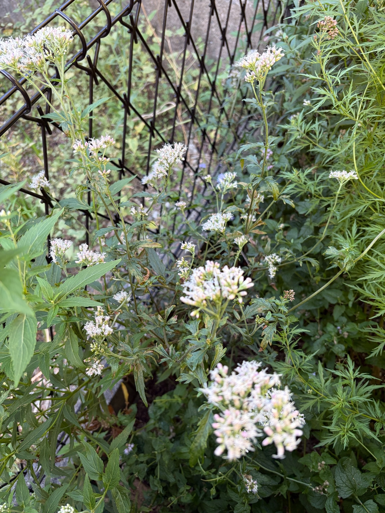

2026/10/11 白い糸状の花が枝先に広がり、蕾とともに秋の花姿を見せています
10月11日のキクバフジバカマ（原種系）は、細く伸びた茎の先々で花が開き、白からごく淡いピンク色に見える糸状の部分が広がっています。高く伸びた枝先だけでなく、株の中ほどや低い位置にも花房があり、あちこちに白い花が点在しています。
10月4日にも、ピンク色の蕾の間から白い糸状の花が広がる姿を記録しました。それから1週間がたち、今回も開花が続いています。よく開いた花房では白い糸状の部分が重なり、蕾がまとまっている花房とは違う、ふんわりとした輪郭になっています。
ただ、どの枝先も同じように咲きそろっているわけではありません。白い花が目立つ花房のすぐ近くにも、淡いピンク色の蕾がまとまって残っています。今は、開いた花を楽しみながら、これから咲く蕾の様子も見られる段階だと感じます。

高い枝先では、白く開いた花がよく目立ちます
左上へ伸びた茎の先では、花房の広い範囲に白い糸状の花が広がっています。細い糸が外へ伸びることで、花房の縁がやわらかく見え、淡い色の小さな花がまとまった姿になっています。
その中にも、まだ閉じた蕾が残っています。白く開いた部分の下や花房の外側には、先端が淡いピンク色になった細長い蕾が見えます。遠目にはよく咲いているように見える花房でも、近くを見ると、開いた花とこれから開く蕾が入り混じっています。
右上へ立ち上がった細い茎の先にも、白い糸状の部分が広がる花房があります。こちらも白い花だけで埋まっているわけではなく、ピンク色の蕾や緑色を帯びた部分が残っています。高い位置の花房同士でも、開いた花の広がり方や残っている蕾の量には違いがあります。
株の中ほどにも、大小の花房が点在しています
株の中央付近には、白い糸状の花がまとまって開いた花房が見られます。その周りにも、小さな花房や、横へ伸びた枝先についた花があり、高い位置の花だけが咲いている状態ではありません。
左側の中ほどにある花房では、開いた白い花と、先端がピンク色の蕾が並んでいます。花房の一部はふんわりと広がっていますが、別の部分では蕾の細長い形がはっきりと分かります。同じ枝先でも、ひとつひとつの花がそろって開くわけではないことが伝わってきます。
低い位置にも小さな白い花房が見られます。上の花房から下の花房まで一様に咲き進むというより、それぞれの枝先で少しずつ開いているように見えます。花房の高さだけで、咲く順番が決まっているわけではなさそうです。
細い茎が立ち上がったり、斜めや横へ伸びたりしているため、花房の間には空間があります。一面が花で覆われる姿とは違い、枝先ごとに咲く小さな花のまとまりを眺められるところが、今の株の特徴です。
白い花の間には、これから開く蕾も残っています
まだ閉じた蕾は、淡いピンク色の先端と、白っぽい部分や緑色を帯びた付け根が見えます。まとまってついている場所では、小さな粒というより、細長く伸びた蕾の形が分かるようになっています。
一方で、枝分かれした細い茎の先には、緑色の小さな蕾が集まった部分もあります。すでに白い糸状の花が広がっている花房と比べると、まだ引き締まった小さなまとまりに見えます。
今の株には、白く開いた花、ピンク色が目立つ蕾、小さな緑色の蕾が同時にあります。株全体が一度に同じ段階へ進むのではなく、枝先ごとの差を残したまま開花が続いているように感じます。
蕾が残っていることは、これからの花を楽しみにできる部分でもあります。ただ、残った蕾がすべて同じように開くかどうかは、今後の様子を見ていきたいと思います。
10月4日から1週間。花房ごとの違いを残しながら開花が続いています
10月4日は、9月22日にふくらんでいた蕾の一部が開き、複数の花房で白い糸状の花が見られる状態でした。その時点でも、開いた花とピンク色の蕾、小さな緑色の蕾が混在していました。
10月11日も、その開花の流れが続いています。今回目に入るのは、高い枝先や株の中ほど、低い位置に点在する白い花です。よく開いた花房では、糸状の部分が外へ広がり、細い茎の先にやわらかな花のまとまりができています。
一方で、前回と同じように、花房ごとの咲き具合の違いは残っています。白い花がよく目立つところもあれば、まだピンク色の蕾が目を引くところもあります。1週間がたってすべてが一斉に咲きそろったというより、それぞれの花房で開花が続いている姿として見ておきたいと思います。
前回と今回では見る角度が異なるため、花の数がどれだけ増えたかを正確に比べることはできません。それでも、今回も株の各所で開いた花が見られ、まだ蕾も残っていることから、開花が続く途中の姿を楽しめています。
切れ込みのある葉には、黄ばみや褐色の傷みも見られます
花の下には、キクバフジバカマらしい切れ込みのある葉が残っています。細い茎の節から葉が広がり、その上に花房がついています。
ただ、葉の色や状態はそろっていません。緑色を保っている部分がある一方で、黄色っぽい斑状の変色が見られる葉や、縁や先端が褐色になった葉もあります。葉が反ったり、縮れたように見えたりする部分もあり、花のやわらかな姿とは対照的に、葉の傷みも目に入ります。
10月4日にも、葉の黄ばみや褐色の傷み、反りや縮れを記録しました。今回も同じような状態が見られますが、葉ごとに違いがあり、株全体が一様に黄ばんでいるわけではありません。
花が咲いているからといって、葉まで傷みのない状態とは限りません。今は、開花が続いていることと、葉に変色や傷みが見られることの両方を、そのまま記録しておきたいと思います。傷みの原因については、見た目だけで決めつけず、今後の変化も見ていきます。
咲いている花と残る蕾を、引き続き見ていきたいと思います
10月11日のキクバフジバカマは、枝先の各所で白い糸状の花を広げながら、まだ淡いピンク色の蕾も残しています。よく開いた花房と蕾の多い花房が隣り合い、株の中にいくつかの開花段階が重なっています。
今の姿を一言で満開とするよりも、花房ごとの違いを残しながら咲き続けている、と捉える方がしっくりきます。白くふんわりと開いた部分だけでなく、その隣にある蕾も含めて眺めると、これからの変化も楽しみに感じられます。
今後は、残っているピンク色の蕾が開いていく様子や、小さな蕾の房がどのように育つのかを見ていきたいと思います。花房の変化とともに葉の状態にも目を向けながら、秋のキクバフジバカマの姿を引き続き記録していきます。
これからアサギマダラが飛来してくれるのを、楽しみに待ちたいと思います。